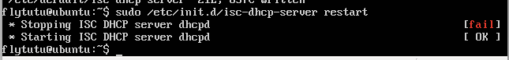

安装dhcp
测试环境为Ubuntu15.04系统
安装如下：
1 | sudo apt-install dhcp3-server |
在网上会看到出现两个包：dhcp3-server和isc-dhcp-server，实际上这两个包为同一个包，只是配置文件名称发生了差异（/etc/dhcp3 –> /etc/dhcp），参考

配置dhcp
安装了dhcp后并不能马上开启服务开始使用，必须要配置才能成功的开启服务。
要打开/etc/default/isc-dhcp-server并在里面选择你要使用的网卡:
1
sudo vim /etc/default/isc-dhcp-server
选择了网卡后就要进行下一项。对你的/etc/dhcp/dhcpd.conf进行修改，我是直接在该文件里面进行添加。
1
sudo vim /etc/dhcp/dhcpd.conf
配置就如下图:
给你的网卡固定一个ip。
1
sudo vim/etc/network/interfaces
将你选择的网卡固定一个ip。这一步非常重要，很多人错误就是没有这一步。
开启服务。
1
sudo /etc/init.d/isc-dhcp-server restart

在局域网的其他机器配置dhcp服务器为本机，然后查看IP。
错误
当开启服务时，出现下面的错误。
解决方法：查看syslog。
1 | tail /var/log/syslog |
在选择网卡时出现问题。